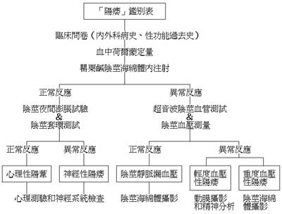
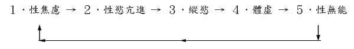

一、控制不射精－－基础篇
1)阴茎的各种传说与形状
阴茎的形状、尺寸、大小，快久，可说是男性瞩目的焦点，而且一提起这个 话题，马上会变得自卑感很重或神经兮兮的。但实际上，它对于性爱并无绝对的 影响。
自古以来，阴茎即有各种不同的传说与及说法。诸如：过度使用很快便会衰 退、交而不泄便能持久、越锻练越会增强、不锻练便会衰弱……等等。
以前更有人将男人名器，分出了排名的先后：一黑、二雁高、三前粗大、四紫、五栏杆、六带疣、七弯曲、八天狗、九腐朽、十包茎。
至于，它的意思依序是：颜色黑、角度高、龟头粗大、颜色紫、羊眼圈、入珠、左弯右曲、不孕、阳痿不举、无法外翻。
一般而言，阴茎的形状可分成六类，如下：
(一)香覃型
龟头像香覃的突出，东方男性阴茎形状大都属之，颇能博得 女性欢心。
(二)试管型
龟头不像香覃型大，整体显的细长，较香覃型略逊一筹。
(三)球棒型
与球棒一样，属于中间粗大型。阴茎上方比龟头粗，会让女性有卡住的担心。
(四)黄瓜型
与球棒型类似，但整体而言显得较细。
(五)船头型
龟头部份往上翘，很少人有这种类型，名器中的名器，相当受女性的器重。
(六)三角型
越前端越细的类型，必需使用一点技巧，否则无法使女性满足。
2)弯曲、扭曲的各种情形
- 弯曲的情形：
阴茎左弯、或右曲的，两者所佔的比例合计57%，比中正不倚的还要多。而弯曲的阴茎，比直的阴茎更容易使女孩子得到高潮。
左弯--「左」宗棠：『惯用右手的，通通向我这边站』--38%
右弯--于「右」任：『惯用左手的，请到右边来……』--19%
直的--蒋「中」正：『剩下的，就原地立正不要动。』--43%
- 扭曲的情形：
向左扭曲--抽送时只要向「左」插，对方即可高潮--24%
向右扭曲--抽送时只要向「右」插，对方即可高潮--23%
没有扭曲--必须「左右」两方抽送，对方才可高潮--53%
3)硬度、尺寸的测试标准
一般而言，东方男性阴茎的硬度，比欧美白种人男性优越，但尺寸则以欧美 较长。
硬度的测试标准：
| 相当硬度 | 硬度指数 | 女性满足的顺序 |
|---|---|---|
| 湿毛巾拧乾般 | 100 | 3 |
| 橡 皮 般 | 80 | 1 |
| 生 胶 般 | 60 | 2 |
| 鱼 糕 般 | 40 | 4 |
| 唇 膏 般 | 20 | 5 |
尺寸的测试标准：
据调查资料显示，阴茎的标准平均长度是12cm、粗度是3.5cm(直径)、东方男性中，大约有80%，阴茎的长度是12～15公分。最近美国旧金山加州大学也提出了一项科学研究。丈量了六十位健康男性勃起时的大小，发现其平均长度是12.8cm、周长为12.2公分。
主持此研究的旧金山总医院泌尿科医生玻．Ｓ指出：临床测量的结果，颢示美国男人那话儿很大的印象，其实是错误的，这个假像使得男人排队要求进行阴茎整形。事实上，真正合乎整形条件的男子，不到百分之二。何况就算在标准以下，也不一定非得要将之加大。这完全是性爱技巧上的问题。
4)男性性功能的各种障碍
性器短小、发育不全、举而不坚、坚而不久、遗精梦遗、放尿白浊、小便分叉、腰酸背痛、四肢无力、头晕目眩、失眠多梦、耳鸣心悸、视力减退、忧鬱孤独、中医上统称之为「肾亏」。至于西医则无此词，而称之为「脑神经衰弱」。
男性性功能障碍指：1.没有性欲、2.无法勃起、3.早泄、4.无法射精、5.达不 到高潮。而最让男性困扰、勇于求医的，则大多数都集中在「无法勃起」、「早泄」两项。
「无法勃起」又可细分为：1.不举、2.举而不坚、3.坚而不久、4.久而无精。
有百分之多少的男性有「勃起困难」的现象？34%
其中又有多少是「心理因素」造成的？14%
以前「心理因素」约占90%以上。然而随著医学的进步，「生理因素」方面几乎已经80%以上都可以诊断的出来。换句话说，目前男性勃起方面有困难，「心理」及「生理」因素几乎各平分秋色。
5)阳痿各种鑑别表、成因
阳痿鑑别表

各种「阳痿」的原因
每个男人不管年轻、中老年（与年纪无关），都会有患上阳痿的经验。有的人从此就一厥不振，有的则原因消除后又生龙活虎。
阳痿的原因除了器官本身的疾病外，也关连到心理上种种因素，约可分为：
- 生病
因糖尿病和许多的疾病，而造成阳痿。
- 服药
服用降高血压的药物、镇静剂、抗郁剂等产生阳痿的副作用。
- 疲劳
工作过度所带来的压力和疲劳所致。
- 饮酒过度
想放松心情而饮酒，造成恶性循环，酒量渐变渐大。
- 过度饱食
血液急速流向胃部、肝脏和胰脏内，使得勃起困难。
- 相信神话
相信精力绝伦的神话造成自卑感，因此勉强勃起后造成阳痿。
- 强烈的目的意识
将性行为当作夸耀的一定课题，心理上强迫自己达成。
- 引不起性欲
因工作、课业、生活上的失望，和自信心丧失有关。
- 过度挂念年龄
自己因年龄关系而任为自己已经不行了所致。
- 忧鬱状态
多数是中年人，因罹患忧虑症，使性欲减退。
- 感情的对立
因和性对像感情不融洽所造成。
依医学文献记载，糖尿病和阳痿两者间的关系，于西元一七九八年，首先由Rollo提出，但至一九五○年以前，仍鲜有这方面的研究报告，一直到最近几年来才受到医界的重视，而有大批的学者投入这方面的研究。根据国外的调查报告，糖尿病病患约有30%到70%会出现不同程度的阳痿，而其致病得真正原因，至今尚仍然无定论。
至于，糖尿病阳痿症治疗方面，目前是以实施阴茎海绵体注射血管扩张剂为主。约有八成到九成病人经过此种方法治疗后性行为功能可以得到改善。其馀的一成到二成病人乃为严重的血管阻塞，则需以动脉重接手术、装置人工阴茎来治疗。
6)早泄的定义以何为标准
早泄究竟是怎麽一回事呢？这很难加以定义。根据某调查显示：
插入之后至高潮期间，在24秒以内--0.9%，1分钟以内--3.0%，2分钟以内--18.05。故倘以2分钟为准的话，约有22%的男人早泄。
一般而言，男人是否早泄，有下面四种说法与标准（择一即可）：
阴茎进入阴道算起，1分半～2分就不算早泄。
以阴茎在阴道内的抽送次数做标准，十次以上为正常。
马斯特的定义是一半以上行房次数中，不能使女方达到高潮。
凯布兰定义是：射精是种不能控制的反射作用，但可以训练。如果一直无法控制这种反射，就是早泄。
7)唐璜症候症、性欲亢进
唐璜症候群（Don Juans yndrome）：性焦虑
在精神医学领域裡，有所谓「唐璜症候（Don Juans yndrome）」群。典型的案例是：有大众情人、调情圣手之称的影星－－克拉克盖博。
根据诺伊（P.NOY）的报告，在他所调查的２６名非器性质的性无能患者当中，就有１５名出现这种「唐璜症候群」的行为。
依据其说明，情况大概这样：唐璜是谈情圣手，但不见得是床上的健将。相反的，有不少的比例因为中看不中用，在「床第上」常常无济于事。于是他无法从「性行为」中获得满足。为了排除自己对男「性」气概的疑虑，所以他一再的「猎艳与作爱」，想重新证明自己的能力，以减轻心中的「性焦虑」。
性欲亢进症
据诺伊（P.NOY）表示，由性焦虑所表现出的性无能，其前兆就是「性欲亢进」，它的「恶性循寻」如下表：

8)迟滞射精、命根子骨折
迟滞性射精－－性高潮失常
早泄令人痛恨，不泄也是一大烦恼。性行为时閒过长，甚至到了没有射精、不能消肿的地步，会造成男女双方两相无趣式彷彿两人在作双人体操一样，直至不堪劳累开口喊停。这种性生活长久而言，会因厌倦、焦虑而使性功能失常。
一般而言，若还会有梦遗、自慰，也能射精，只是少了临门一射，这应该不是器官上的障碍，而是因心理问题、精神耗弱、或某些药物引起引起射精功能失常。但如果是永远闭关锁精，那就是不孕症的一个难题了……
根本治疗的方法首需原因认知、然后再作夫妇双方复健性的行为治疗，从感受身体生理需求、性行为的快感、乃至于感受到高潮，如此才有射精的原动力。对有些病人而言，治疗效果相当缓慢，如果要先解决生育的问题，必须借助人工受孕或电激取精。
这种性高潮失常的病症，很多人是以轻度、暂时性的症状表现。譬如：不射精就消软下去、或射精没感觉、有时是「流」出来的，此时双方就要检讨性生活的品质：是否兴致不浓、是否体力不继、或是两人心中有甚麽疙瘩，都不要勉强行房。
命根子骨折－－萨克斯风阴茎
这是一种性生活中的意外事件。阴茎虽然不是骨头，但勃起时它的硬度不下于骨头，所以阴茎也会有骨折的意外。因为在完全充血的状态下曲折过度，会使海绵外层的膜裂伤，海绵体的血液大量渗到底下，形成淤血和阴茎变型。
一般而言，五十至七十岁的男人，采「男下女上」的性交姿势或其它较怪异的姿势最容易「阴茎骨折」。可能是阴茎组织弹性较差、痛觉较不敏锐，一时兴奋而用力过度--奇怪的是断的时候连痛都不痛，却有一声清脆的响声！
学 名－萨克斯风阴茎（SAXPHONE PENIS，也就是「阴茎骨折」）。
发 生－以在外偷情时、採怪异性交姿势、50岁以上的中老年人较常发生。
症 状－阴茎整个变形、血肿、弯曲，就像一条紫色小弟弟。
治 疗－急诊开刀、清除血块、缝补裂伤。手术约费时20分钟左右。
影 响－病人复原后，并不会有任何后遗症。